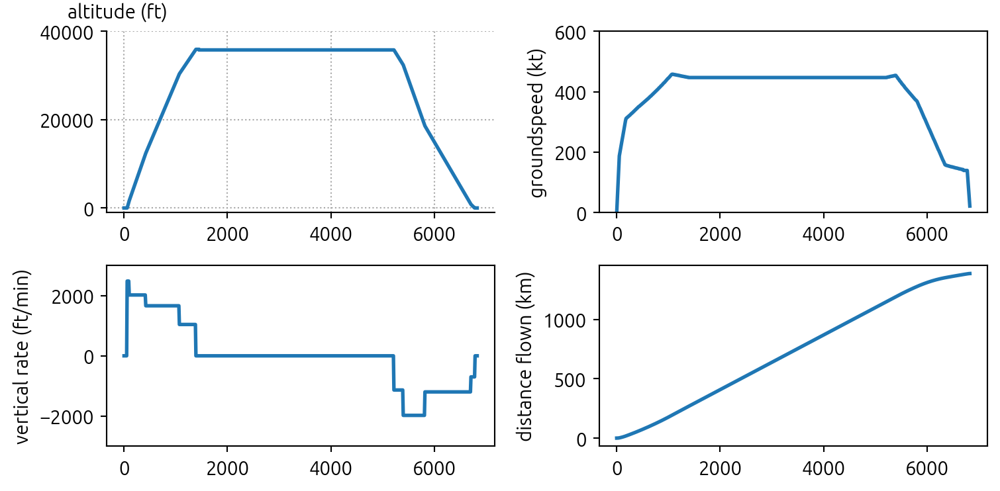
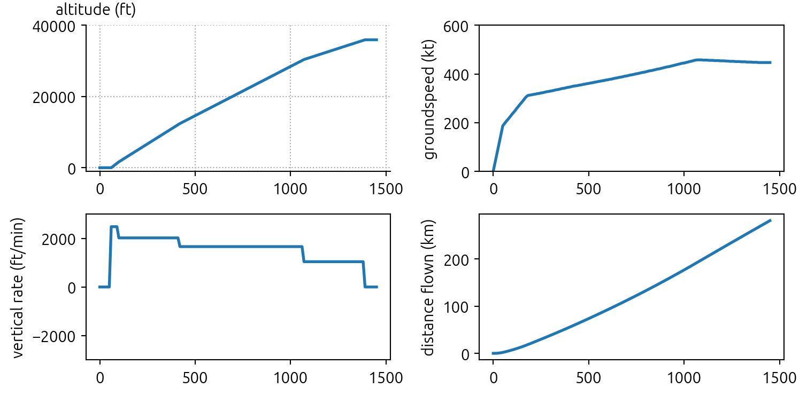
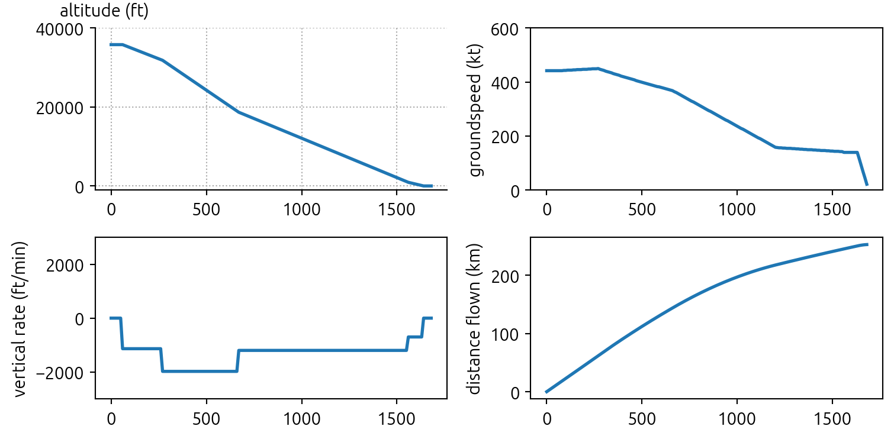
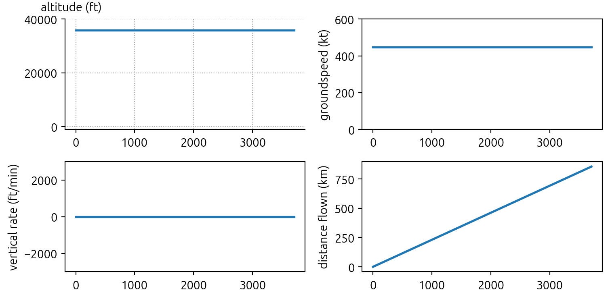
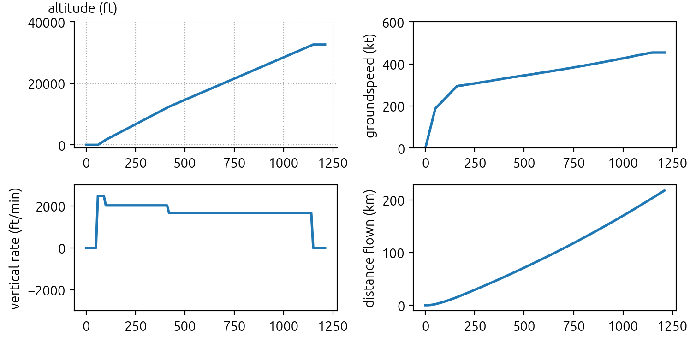
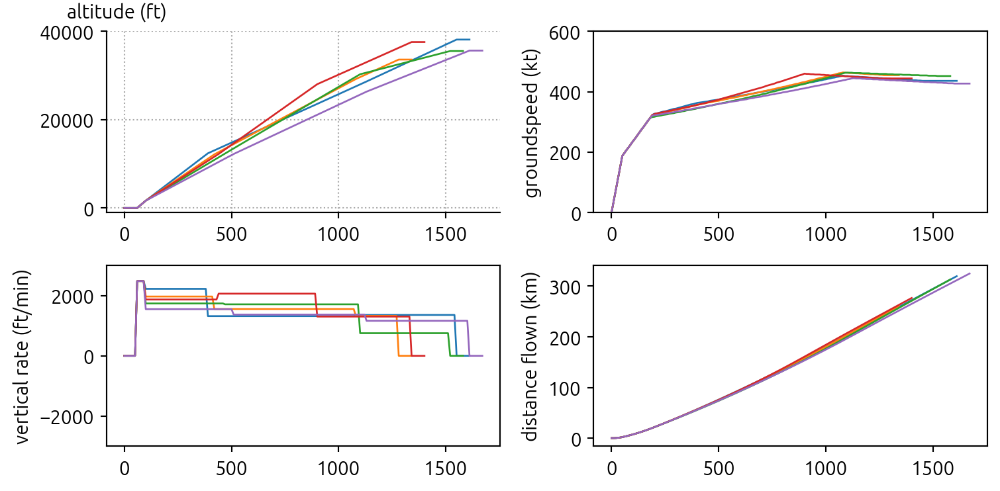
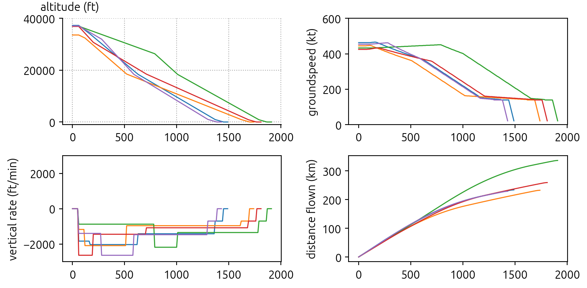
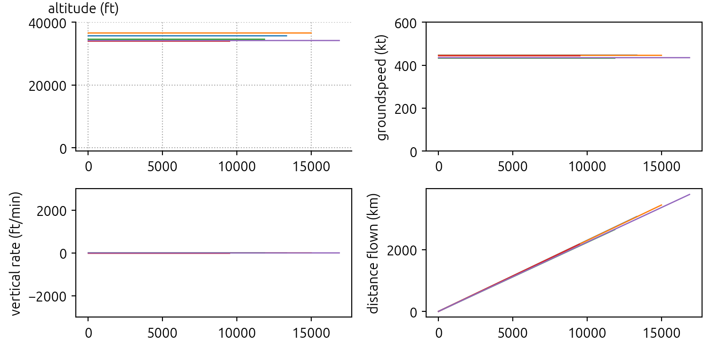
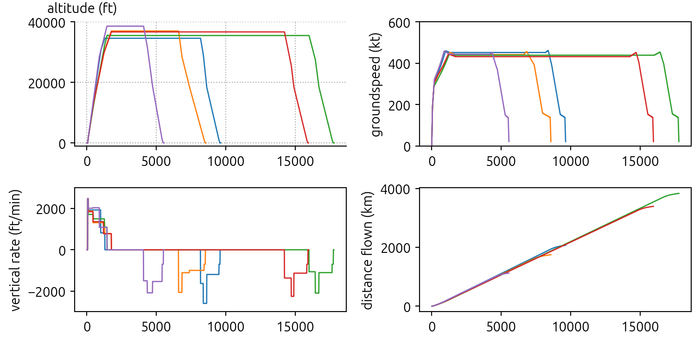
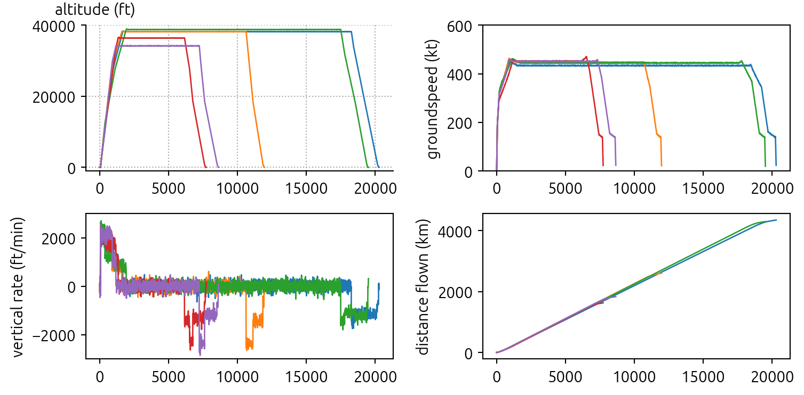

import pandas as pd
import matplotlib.pyplot as plt
from openap.gen import FlightGenerator
fgen = FlightGenerator(ac="a320")5 💅 Trajectory generation
Based on the kinematic module from the OpenAP package, we can conveniently generate realistic flight trajectories for different flight phases, knowing the distribution of speed, vertical rates, and altitudes.
The gen module provides FlightGenerator class to facilitate the generation of flight trajectories.
5.1 Complete flight
To use the flight generator, we need to instantiate the FlightGenerator object by providing the aircraft typecode, as in the following example:
The following blocks of code are functions for plotting the trajectories later on.
Show the plot_traj(flight) code
import matplotlib
# set up the plot styles
matplotlib.rc("font", size=11)
matplotlib.rc("font", family="Ubuntu")
matplotlib.rc("grid", color="darkgray", linestyle=":")
def plot_traj(flights: pd.DataFrame | list[pd.DataFrame], lw=2):
if isinstance(flights, pd.DataFrame):
flights = [flights]
fig, ((ax1, ax2), (ax3, ax4)) = plt.subplots(2, 2, figsize=(8, 4))
for f in flights:
ax1.plot(f.t, f.altitude, lw=lw)
ax2.plot(f.t, f.groundspeed, lw=lw)
ax3.plot(f.t, f.vertical_rate, lw=lw)
ax4.plot(f.t, f.s / 1000, lw=lw)
ax1.set_ylabel("altitude (ft)")
ax2.set_ylabel("groundspeed (kt)")
ax3.set_ylabel("vertical rate (ft/min)")
ax4.set_ylabel("distance flown (km)")
ax1.set_ylim(-1000, 40_000)
ax2.set_ylim(0, 600)
ax3.set_ylim(-3000, 3000)
for ax in (ax1, ax2, ax3, ax4):
ax.spines["right"].set_visible(False)
ax.spines["top"].set_visible(False)
ax.yaxis.set_label_coords(-0.1, 1.05)
ax.yaxis.label.set_rotation(0)
ax.yaxis.label.set_ha("left")
ax.grid()
plt.tight_layout()
plt.show()To generate a complete trajectory, we can call the FlightGenerator.complete() function by specifying the time step size in seconds. The function outputs a pandas dataframe, containing altitude, flight distance, speed, and vertical_rate.
See an example as follows:
flight = fgen.complete(dt=10)
display(flight)
plot_traj(flight)| t | h | s | v | vs | altitude | vertical_rate | groundspeed | |
|---|---|---|---|---|---|---|---|---|
| 0 | 0 | 0.0 | 0.000000e+00 | 0.0 | 0.0 | 0 | 0 | 0 |
| 1 | 10 | 0.0 | 0.000000e+00 | 19.3 | 0.0 | 0 | 0 | 37 |
| 2 | 20 | 0.0 | 1.930000e+02 | 38.6 | 0.0 | 0 | 0 | 75 |
| 3 | 30 | 0.0 | 5.790000e+02 | 57.9 | 0.0 | 0 | 0 | 112 |
| 4 | 40 | 0.0 | 1.158000e+03 | 77.2 | 0.0 | 0 | 0 | 150 |
| ... | ... | ... | ... | ... | ... | ... | ... | ... |
| 681 | 6790 | 0.0 | 1.386008e+06 | 59.8 | 0.0 | 0 | 0 | 116 |
| 682 | 6800 | 0.0 | 1.386606e+06 | 47.6 | 0.0 | 0 | 0 | 92 |
| 683 | 6810 | 0.0 | 1.387082e+06 | 35.4 | 0.0 | 0 | 0 | 68 |
| 684 | 6820 | 0.0 | 1.387436e+06 | 23.2 | 0.0 | 0 | 0 | 45 |
| 685 | 6830 | 0.0 | 1.387668e+06 | 11.0 | 0.0 | 0 | 0 | 21 |
686 rows × 8 columns

<Figure size 672x480 with 0 Axes><Figure size 672x480 with 0 Axes><Figure size 672x480 with 0 Axes>5.2 Flight segments at different phases
We can also generate partial trajectories for only climb, descent, or cruise segments of the flight. The following are three examples.
flight_climb = fgen.climb(dt=10)
plot_traj(flight_climb)
<Figure size 672x480 with 0 Axes><Figure size 672x480 with 0 Axes><Figure size 672x480 with 0 Axes>flight_descent = fgen.descent(dt=10)
plot_traj(flight_descent)
<Figure size 672x480 with 0 Axes><Figure size 672x480 with 0 Axes><Figure size 672x480 with 0 Axes>flight_cruise = fgen.cruise(dt=10)
plot_traj(flight_cruise)
<Figure size 672x480 with 0 Axes><Figure size 672x480 with 0 Axes><Figure size 672x480 with 0 Axes>5.3 Generate flight with specific parameters
Previously, we generated the most typical flight profile based on the default values in the WRAP kinematic model. However, we can customize the generation by providing specific parameters.
For example, with the following code, we can specify CAS/Mach setting during the climb and the top of the climb altitude for the trajectory.
flight_climb_with_params = fgen.climb(
dt=10,
cas_const_cl=280,
mach_const_cl=0.78,
alt_cr=32000,
)
plot_traj(flight_climb_with_params)
<Figure size 672x480 with 0 Axes><Figure size 672x480 with 0 Axes><Figure size 672x480 with 0 Axes>5.4 Generate flights randomly sampled using the kinematic model
In many use cases, we want to generate a wide range of flight trajectories. The FlightGenerator allows such a possibility. We can generate random and yet realistic trajectories like a breeze.
You simply need to provide the radom=True argument when generating trajectories. The generator will randomly sample parameters from the proper distribution of each parameter in the WRAP model.
The following example shows several randomly generated flights at different flight phases and randomly sampled complete trajectories.
climb_flights= [fgen.climb(dt=10, random=True) for i in range(5)]
plot_traj(climb_flights, lw=1)
<Figure size 672x480 with 0 Axes><Figure size 672x480 with 0 Axes><Figure size 672x480 with 0 Axes>descent_flights = [fgen.descent(dt=10, random=True) for i in range(5)]
plot_traj(descent_flights, lw=1)
<Figure size 672x480 with 0 Axes><Figure size 672x480 with 0 Axes><Figure size 672x480 with 0 Axes>cruise_flights = [fgen.cruise(dt=10, random=True) for i in range(5)]
plot_traj(cruise_flights, lw=1)
<Figure size 672x480 with 0 Axes><Figure size 672x480 with 0 Axes><Figure size 672x480 with 0 Axes>complete_flights = [fgen.complete(dt=10, random=True) for i in range(5)]
plot_traj(complete_flights, lw=1)
<Figure size 672x480 with 0 Axes><Figure size 672x480 with 0 Axes><Figure size 672x480 with 0 Axes>5.5 Add noise to the flight data
Sometimes, we may also want to add some random noises to the trajectory data. With the FlightGenerator.enable_noise() function, we can make sure Gaussian noises are added to all trajectory points.
The noise model is based on ADS-B Version 1 and 2, with a NACv (navigation accuracy category - velocity) value of 3 and a NACp (navigation accuracy category - position) value of 10. More details can be found in Sun (2021, Chapter 9).
fgen.enable_noise() # enable Gaussian noise in trajectory data
complete_flights = [fgen.complete(dt=10, random=True) for i in range(5)]
plot_traj(complete_flights, lw=1)
<Figure size 672x480 with 0 Axes><Figure size 672x480 with 0 Axes><Figure size 672x480 with 0 Axes>